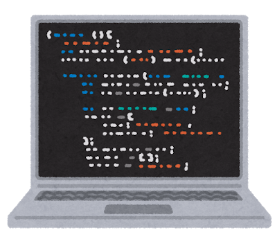

Fourteenager Lab.
Products
「偏見を大切にするからこそ、抗えるんだよ。」
GitHub 上に公開しているものなどを紹介します。
（2021年までの物です。最近は更新出来ていません。）
-
FOURTEENAGER Lab.
当たり障りのあるポートフォリオサイト
プロフィール、ポートフォリオサイトです。当たり障りがあります。
-
ランチの候補がルーレット
陳麻婆豆腐に行きましょう。
「ランチ何にしようかな～」と悩んだときに使えるルーレットです。Vue.js、TresJS、three.jsを使っています。
宣言的UIって良いなぁ！ と思いながらコーディングしています。 -

（アイコン準備中）
CCFinderSW
a token-based code clone detection tool
トークン単位のコードクローン検出が出来るツールです。井上研究室時代にコツコツ作っていたものです。偉大な CCFinder の名前を使って、後継機として出させてもらいました。今の所保守は考えてませんが、気持ちを乗せていただければやります。
-
BouYearFestival
忘年会の幹事～、板東は英二～
入社一年目に、会社の忘年会のために用意した余興用アプリです。Heroku で公開するにあたって、マイナーチェンジを行いました。主に見栄え・CSS 的な箇所、トップページ、しおりページ、ストーリー・コント・世界観（笑）の作成を担当しました。
-
sambadejaneiro
サンバを踊るCSSです。
サンバを踊るだけのCSSです。Qiita も書きました。今は踊るのを見るだけなので、ゲーム機能を付けたいですね。
Link：sambadejaneiro Source：sambadejaneiro Qiita：sambadejaneiro
-
JKTWR BATTLE!!
あ、パクリとかじゃないですね。
JavaScript でゲームが作りたかった！未完成ですが、「あ、こいつやってんな……」感がそこそこ出てます。